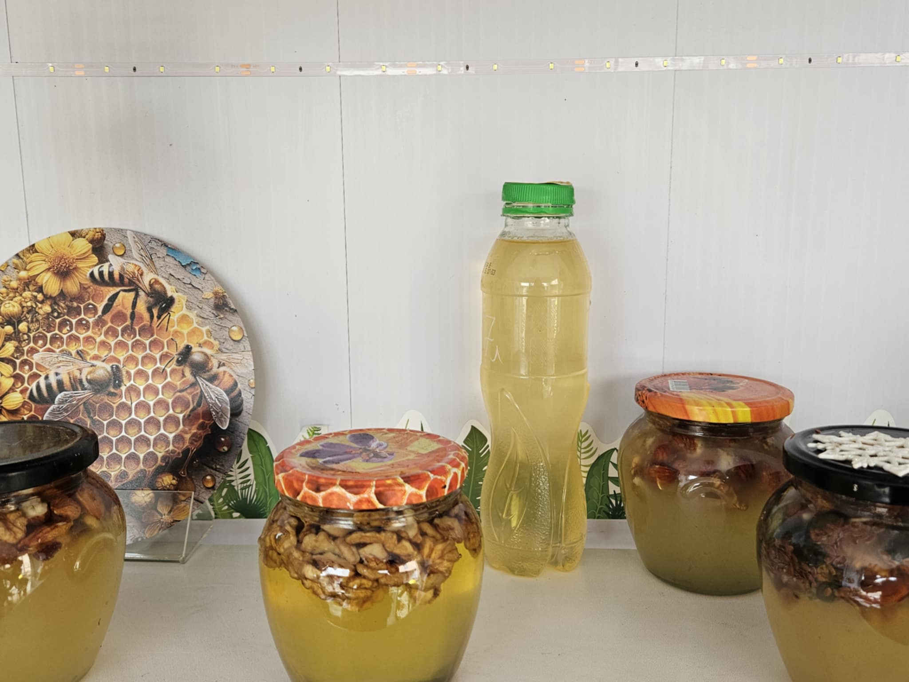
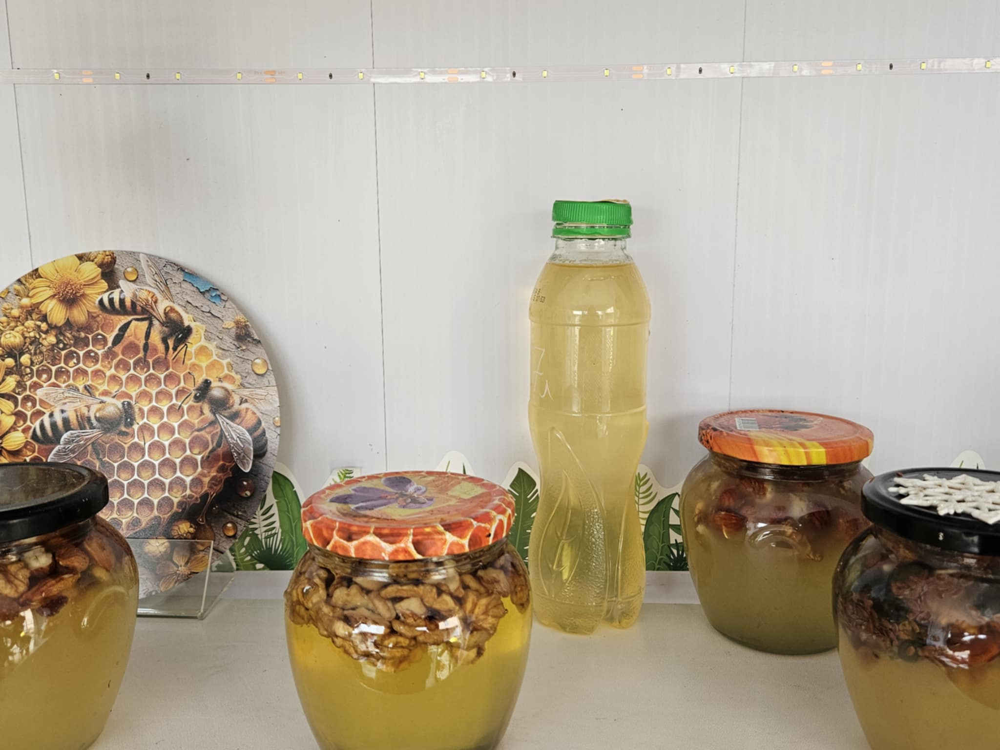

Deținem un magazin de produse apicole naturale, locația: Republica Moldova, raionul Cantemir, Piața Centrală.

Produsele noastre:

Scopul nostru este de a aduce în fața oamenilor un produs natural, sănătos și plin de beneficii.
Produsele apicole sunt recunoscute pentru proprietățile sale nutritive și terapeutice, iar prin vânzarea acestelor, se urmărește nu doar satisfacerea cerinței pentru alimente de calitate, dar și educarea publicului în legătură cu importanța consumului de produse naturale.
>Beneficiile mierii:
Consumul regulat de miere poate întări sistemul imunitar datorită proprietăților sale antibacteriene și antioxidante.
Mierea conține o gamă largă de antioxidanți, cum ar fi flavonoidele și fenolii, care ajută la combaterea radicalilor liberi din organism. Acești antioxidanți contribuie la reducerea riscului de boli cronice și îmbătrânire prematură.
Mierea este un remediu natural eficient pentru tuse, mai ales în combinație cu lămâie sau ghimbir. Poate calma iritațiile din gât și reduce inflamația.
Consumul de miere înainte de culcare poate ajuta la îmbunătățirea calității somnului, datorită faptului că aceasta stimulează eliberarea de melatonină în creier, hormonul care reglează ciclul somn-veghe.
Mierea este adesea folosită în produse cosmetice datorită proprietăților sale hidratante și antibacteriene. Poate fi aplicată pe piele pentru a trata acneea, iritațiile sau arsurile minore. De asemenea, hidratează pielea și o face să arate mai luminoasă.
>Beneficiile polenului:
Polenul poate sprijini metabolismul și procesul de digestie, având efecte benefice asupra sistemului gastrointestinal, ajutând la absorbția nutrienților și prevenind constipația.
Polenul poate contribui la reducerea riscului de boli cardiovasculare, având un impact pozitiv asupra tensiunii arteriale și a nivelurilor de colesterol. De asemenea, poate îmbunătăți circulația sângelui.
Consumul de polen de albine poate contribui la protejarea ficatului și îmbunătățirea funcțiilor hepatice, ajutând la regenerarea celulelor hepatice.
Polenul de albine are un efect detoxifiant asupra organismului, ajutând la eliminarea toxinelor și la curățarea ficatului, rinichilor și a altor organe de excreție.

>Beneficiile păsturii:
Datorită conținutului de vitamine din complexul B și a altor substanțe benefice, păstura de albine poate ajuta la reducerea nivelului de stres și anxietate, promovând un sentiment general de calm și relaxare.
Consumul de păstură de albine poate sprijini funcțiile cerebrale, îmbunătățind concentrarea, memoria și capacitatea de învățare. Este un supliment natural benefic pentru sănătatea mentală, fiind de ajutor în prevenirea unor afecțiuni neurodegenerative.
Păstura este cunoscută pentru efectele sale benefice asupra digestiei. Are un conținut ridicat de enzime naturale care facilitează digestia și ajută la reglarea tranzitului intestinal, contribuind la prevenirea constipației.

 
